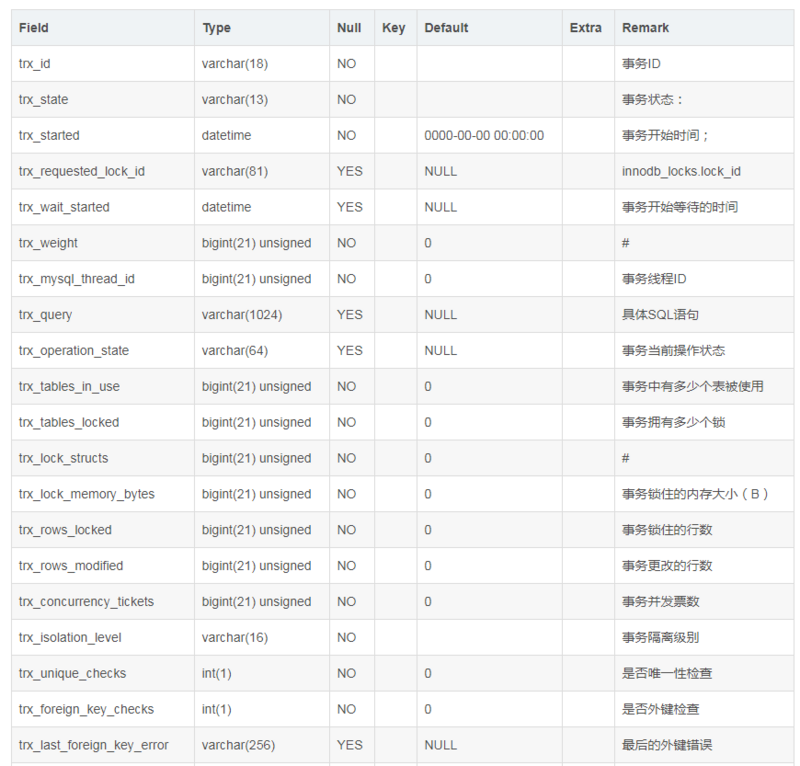
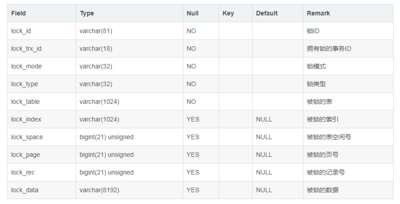
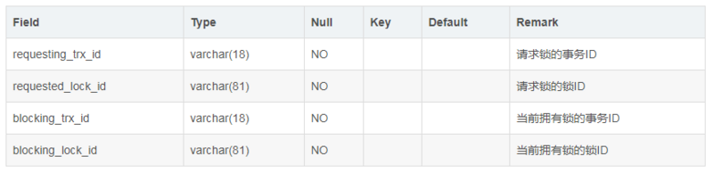
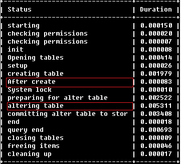

Mysql 012mysql锁相关
- information_schema.partitions 表的分区信息
- information_schema.processlist 客户端连接信息
- information_schema.innodb_trx 当前运行的所有事务
- information_schema.innodb_locks 当前出现的锁
- information_schema.innodb_lock_waits 锁等待的对应关系
查询发生锁等待占有系统资源的语句
|
|
trx_query是占有系统资源的语句,trx_id是事务id,trx_mysql_thread_id为连接线程id。
执行kill {trx_mysql_thread_id} 杀掉这个MYSQL语句的线程即可。
其他的记录不需要关注，因为其他的记录状态为"RUNNING" ,即正在执行的事务，并没有锁。
desc information_schema.innodb_trx

desc information_schema.innodb_locks

desc information_schema.innodb_lock_waits

|
|
MySQL在进行alter table等DDL操作时，有时会出现Waiting for table metadata lock的等待场景。
而且，一旦alter table TableA的操作停滞在Waiting for table metadata lock的状态，
后续对TableA的任何操作（包括读）都无法进行，
因为他们也会在Opening tables的阶段进入到Waiting for table metadata lock的锁等待队列。
如果是产品环境的核心表出现了这样的锁等待队列，就会造成灾难性的后果。
造成alter table产生Waiting for table metadata lock的原因其实很简单，
一般是以下几个简单的场景：
场景一：长事物运行，阻塞DDL，继而阻塞所有同表的后续操作
通过show processlist可以看到TableA上有正在进行的操作（包括读），
此时alter table语句无法获取到metadata 独占锁，会进行等待。
这是最基本的一种情形，这个和mysql 5.6中的online ddl并不冲突。
一般alter table的操作过程中（见下图），
在after create步骤会获取metadata 独占锁，当进行到altering table的过程时（通常是最花时间的步骤），
对该表的读写都可以正常进行，这就是online ddl的表现，并不会像之前在整个alter table过程中阻塞写入。
（当然，也并不是所有类型的alter操作都能online的，具体可以参见官方手册：http://dev.mysql.com/doc/refman/5.6/en/innodb-create-index-overview.html）
处理方法： kill 掉 DDL所在的session.

场景二：未提交事物，阻塞DDL，继而阻塞所有同表的后续操作
通过show processlist看不到TableA上有任何操作，
但实际上存在有未提交的事务，可以在 information_schema.innodb_trx中查看到。
在事务没有完成之前，TableA上的锁不会释放，alter table同样获取不到metadata的独占锁。
处理方法：
通过 select * from information_schema.innodb_trx\G, 找到未提交事物的sid, 然后 kill 掉，让其回滚。
场景三：
通过show processlist看不到TableA上有任何操作，在information_schema.innodb_trx中也没有任何进行中的事务。这很可能是因为在一个显式的事务中，对TableA进行了一个失败的操作（比如查询了一个不存在的字段），这时事务没有开始，但是失败语句获取到的锁依然有效，没有释放。
从performance_schema.events_statements_current表中可以查到失败的语句。
官方手册上对此的说明如下：
If the server acquires metadata locks for a statement that is syntactically valid but fails during execution, it does not release the locks early. Lock release is still deferred to the end of the transaction because the failed statement is written to the binary log and the locks protect log consistency.
也就是说除了语法错误，其他错误语句获取到的锁在这个事务提交或回滚之前，仍然不会释放掉。
because the failed statement is written to the binary log and the locks protect log consistency 但是解释这一行为的原因很难理解，因为错误的语句根本不会被记录到二进制日志。
处理方法：
通过performance_schema.events_statements_current找到其sid, kill掉该session. 也可以 kill 掉DDL所在的session.
|
|
总之，alter table的语句是很危险的(其实他的危险其实是未提交事物或者长事务导致的)，在操作之前最好确认对要操作的表没有任何进行中的操作、没有未提交事务、也没有显式事务中的报错语句。如果有alter table的维护任务，在无人监管的时候运行，最好通过lock_wait_timeout设置好超时时间，避免长时间的metedata锁等待。
|
|